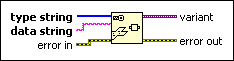

Flattened String To Variant Function
Owning Palette: Variant VIs and Functions
Requires: Base Development System
Converts flattened data into variant data.
Use the Flatten to String function to produce data string and type string.

 Add to the block diagram Add to the block diagram |
 Find on the palette Find on the palette |